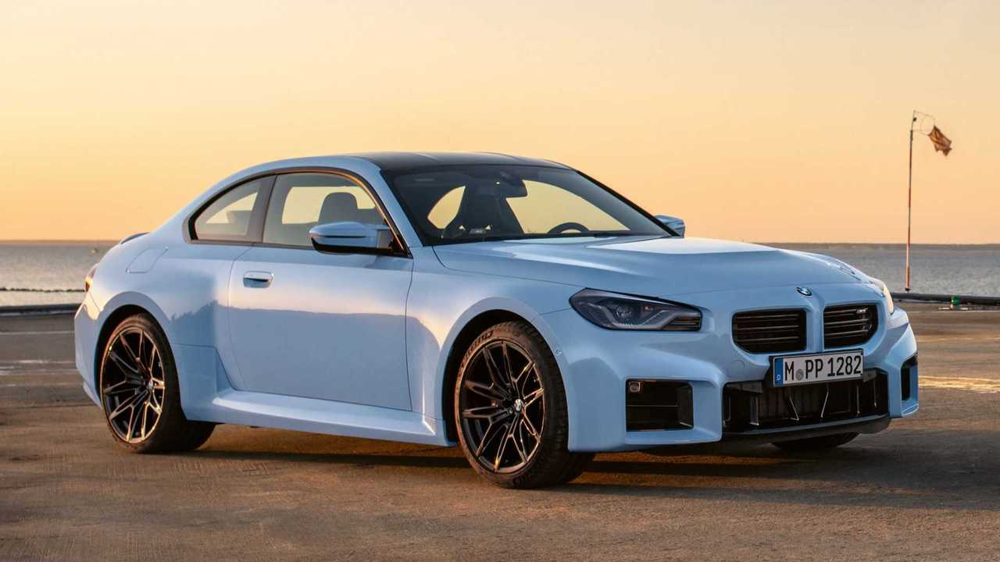

BMW M2
A compact sports coupe with bold styling and a driver-focused character. The M2 brings the M experience to a smaller two-door package.
View Details
- Body style: Two-door coupe
- Engine: 3.0-liter twin-turbocharged inline-six
- Horsepower: 453 hp
- Drive Type: RWD